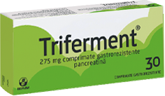
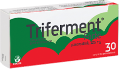

Întreabă-ne orice despre digestie!
Produsele TRIFERMENT si pentru ce se utilizează

Cine poate lua TRIFERMENT &Triferment Forte
Ce sunt enzimele digestive?
Cum acţionează enzimele digestive în cadrul procesului digestiv?
Cum se administreaza produsele Triferment?
DICTIONAR MEDICAL
Fazele procesului digestiv
De ce enzimele digestive trebuie să fie într-o formă farmaceutică gastrorezistentă?
Care este legătura între enzime digestive şi nutriţie?
Ce se întâmplă cu nivelul de enzime digestive al organismului?
Contraindicatii
Produsele TRIFERMENT si pentru ce se utilizează

Triferment şi Triferment Forte contin pancreatina in doua concentratii – 275 mg şi 325 mg.
Pancreatina este un amestec de enzime pancreatice – lipaza, amilaza si proteaza – de origine animala, extrase din pancreas de porc.
Triferment si Triferment Forte suplimenteaza organismul cu enzime digestive naturale, eliminand simptomele specifice unei digestii deficitare.
Cine poate lua TRIFERMENT &Triferment Forte?
Triferment si Triferment Forte sunt indicate adulţilor şi copiilor peste 6 ani, care prezintă deficit de enzime digestive.
În funcție de severitatea simptomatologiei, puteţi admnistra Triferment sau Triferment Forte.
Triferment este indicat persoanelor cu dispepsie funcționala (care prezintă balonare, disconfort abdominal, senzație de sațietate precoce, digestie ineficientă) sau in caz de exces alimentar, dar care nu prezintă analize modificate, ecografia nu prezintă modificări, fără scădere ponderală, fără suspiciune sau diagnostic de boală pancreatică.
Triferment Forte este indicat persoanelor cu insuficiența pancreatică exocrina. Insuficienta pancreatica exocrina se manifestă prin simptomele precizate anterior mai prezintă și scădere în greutate, scaune voluminoase cu frecvență modificată, boală pancreatică, ) precum și analize și aspect ecografic modificat.
Cum acţionează enzimele digestive în cadrul procesului digestiv?
La adultul sănătos, funcția pancreatică normală permite organismului să proceseze alimentele corespunzător și să absoarbă nutrienții rezultați în urma procesului de digestie. Una dintre funcțiile pancreasului este cea de secreție a enzimelor digestive (amilază, lipază și protează) în duoden. Aceste enzime contribuie la digestia corectă a carbohidraților, grăsimilor și proteinelor. Când nu se mai secretă suficiente enzime pancreatice (care să ajute la procesul digestiv) apare insuficiența pancreatică exocrină.
Insuficiența pancreatică exocrină reprezintă o scădere a activității enzimelor pancreatice în intestin sub nivelul minim necesar unui proces normal de digestie. Cauzele care pot duce la o astfel de situație pot fi: fibroza chistică, pancreatita cronică, cancerul de pancreas, pancreatectomia parțială sau totală sau diabetul zaharat. Principalele consecințe ale insuficienței pancreatice exocrine sunt: digestia deficitară a grăsimilor și absorbția scăzută a nutrienților (în special a vitaminelor liposolubile A, D, E și K).
Pacienții cu insuficiență pancreatică exocrină pot avea următoarele simptome: steatoree , diaree, scăderi în greutate, flatulență, balonare și dureri abdominale.
Obiectivul terapiei de substituție enzimatică este acela de a livra suficientă activitate enzimatică în lumenul duodenal în același timp în care sunt consumate alimentele,
pentru a normaliza digestia și a ajuta absorbția nutrientilor rezultați în urma digestiei.
Terapia de substituție enzimatică imită răspunsul secretor exocrin al pancreasului sănătos, completând deficitul de enzime (lipază, amilază și protează) la pacienții cu insuficiență pancreatică exocrină.
Struyvenberg MR, Martin CR, Freedman SD. Practical guide to exocrine pancreatic insufficiency - Breaking the myths. BMC Med. 2017;15(1):29. Published 2017 Feb 10. doi:10.1186/s12916-017-0783-y
Cum se administrează produsele Triferment?
Triferment
Doza uzuală este de 1-2 comprimate filmate gastrorezistente Triferment, administrate oral, de 3 ori pe zi, în timpul sau la sfârşitul meselor. Durata tratamentului este stabilită de către medic, în funcție de severitatea deficitului de enzime digestive.
Triferment Forte
Doza recomandată este de 1-2 comprimate gastrorezistente Triferment Forte la fiecare masă. Durata tratamentului este stabilită de către medic, în funcție de severitatea deficitului de enzime digestive
Fazele procesului digestiv
Procesul digestiv începe în cavitatea bucală, urmând ca esofagul să transporte bolul alimentar spre stomac, al cărui rol este de a depozita, a măcina şi a mixa depozitul alimentar împreună cu secreţiile gastrice, proteine predigestive şi de a împinge treptat bolul alimentar către intestinul subţire. La nivelul pereţilor stomacului, absorbţia nutrienţilor este limitată.
Cea mai importantă parte a procesului digestiv are loc la nivelul intestinului subţire, unde se regăsesc cele mai multe enzime digestive cu rol în descompunerea alimentelor până la stadiul de micronutrienţi, ceea ce permite preluarea acestora de către vasele de sânge de la nivelul pereţilor intestinali şi transportarea acestora către organe.
Intestinul subţire este alcătuit din trei portiuni cu funcţii specifice: duodenul, jejunul şi ileonul. DUODENUL este locul unde secreţiile pancreatică şi biliară sunt amestecate cu bolul alimentar prelucrat deja de stomac. JEJUNUL este locul unde are loc absorbţia zaharurilor, acizilor graşi, colesterolului, aminoacizilor, peptidelor, vitaminelor, electroliţilor, calciului, apei. La nivelul ILEONULUI are loc absorbţia acizilor biliari, vitaminei B12, electroliţilor şi a apei, fiind bogat în ţesut limfatic.
Ultima secţiune a tractului digestiv este intestinul gros, principala funcţie a acestuia fiind aceea de a absoarbi apa şi electroliţii, de a forma, depozita şi expulza materiile fecale din organismul uman.
Sistemul digestiv, pe lângă componentele tractului digestiv, este alcătuit din glandele anexe: ficat, vezica biliară si pancreas.
Ca și glandă exocrină, ceea ce definește rolul pancreasului în procesul digestiv, acesta își elimină secreția în duoden. Sucul pancreatic conține trei tipuri de enzime: proteolitice (cu rol în descompunerea proteinelor), lipolitice (cu rol în descompunerea grăsimilor) și amilolitice (cu rol în descompunerea zaharurilor).
De ce enzimele digestive trebuie să fie într-o formă farmaceutică gastrorezistentă?
Pentru siguranţa şi eficienţa tratamentului, este important ca orice preparat farmaceutic ce conţine pancreatină să se prezinte sub o formă farmaceutică gastrorezistentă.
În caz contrar, enzimele digestive vor fi inactivate de către sucul gastric, înainte de a ajunge în intestinul subţire, acolo unde sunt necesare pentru a definitiva procesul digestiv.
Care este legătura între enzime digestive şi nutriţie?
Nutriţia se referă la abilitatea organismului de utiliza şi metaboliza hrana.
Există 45 de nutrienţi esenţiali de care corpul are nevoie în cantităţi specifice pentru a funcţiona corect. Termenul „esenţiali”, în contextul de faţă, se referă la incapacitatea organismului de a sintetiza intern aceşti nutrienţi. Drept urmare, este necesară suplimentarea organismului, pe cale exogenă, cu nutrienţi esenţiali. Alături de carbohidraţi, grăsimi, proteine şi apă, există cel puţin 13, respectiv 20 tipuri de vitamine, respectiv minerale necesare desfăşurării în parametri corecţi a funcţiei metabolice.
Pe măsură ce mâncam, hrana trebuie digerată, în sensul în care trebuie descompusă până la stadiul de micronutrienţi, pentru a fi absorbite în sânge şi transportate către toate părţile corpului.
Celulele corpului uman sunt programate pentru a direcţiona fiecare nutrient pentru a se combina şi interacţiona cu alţi nutrienţi în vederea formării sau reparării celulelor, oaselor, ţesuturilor şi organelor. Acest proces este denumit „metabolism”, iar fiecare reacţie metabolică este iniţiată, controlată şi finalizată cu ajutorul enzimelor. Fără enzime, nicio activitate metabolică nu este posibilă.
Ce se întâmplă cu nivelul de enzime digestive al organismului?
Pe măsură ce înaintăm în vârstă, organele responsabile cu producerea de enzime digestive (cum ar fi pancreasul) devin mai puţin eficiente. În plus, există o serie de factori favorizanţi, precum mediul poluant, mâncarea de tip fast-food procesată şi modificată genetic, încălzirea la microunde, care duc la apariţia radicalilor liberi, fapt ce duce la scăderea eficacităţii organismului de a produce enzime.
Contraindicații
Produsele din gama Triferment sunt contraindicate în caz de:
- Hipersensibilitate la pancreatină sau la oricare dintre excipienţi.
- Pancreatită acută.
- Acutizări ale pancreatitei cronice.
DICȚIONAR MEDICAL
funcție pancreatică exocrină = reprezintă proprietatea pancreasului de a produce enzime digestive
steatoree = prezența unei cantități anormale de grăsimi în scaun
pancreatectomie = înlăturarea prin manevre chirurgicale a unei părți a pancreasului (parțială) sau a întregului pancreas (totală)
terapie de substituție enzimatică = administrarea de preparate care conțin enzime pancreatice